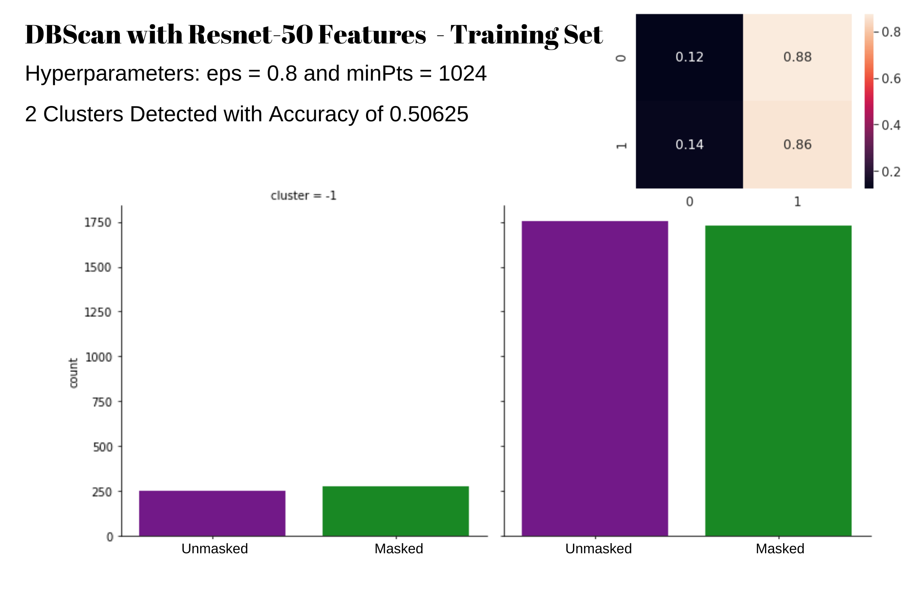
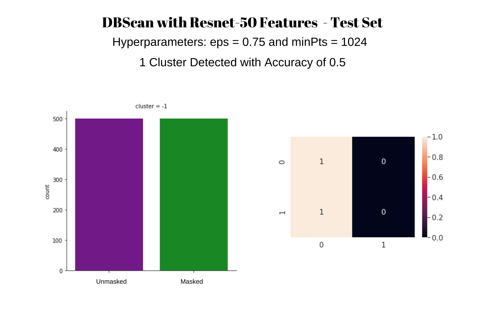

Aditi Shetty, Devanshee Shah, Manasi Deshpande,
Rusty Utomo, Yash Lara
The COVID-19 global pandemic has affected around 214 countries and territories and brought
unprecedented changes globally with around 46 million cases and 1,123,000 deaths reported[1]. In
order to slow the spread of the virus, public health organizations and medical experts have
identified measures such as social distancing and wearing a mask in an effort to reduce the spread
of the virus. With the reopening of business, restaurants and companies, many are instituting
regulations to provide a safe environment given the pandemic. Uber has instituted a “No Mask, No
Ride” policy[2], while other businesses do a manual check of mask verification before customers can
enter their buildings. As the new norm, it becomes imperative to perform face mask detection as a
public health safety measure.
There has been research done in the past to detect face coverings to various accuracies. In [3],
researchers built a system that detects the presence or absence of the mandatory medical mask in
the operating room, in which they combine a face detector and a mask detector together to achieve
this purpose. Similarly, in [4], the researchers developed a hybrid deep learning model to detect
face masks and coverings, using a combination of Resnet50 and SVM. In [5], researchers tried to
achieve the same purpose, through using PCA. Even corporations are rushing towards efficient face
mask detection, as the push for allowing back employees to office workspaces increases. As more and
more countries announce lockdowns (the UK and France most recently), law enforcement too is rushing
towards using AI to detect whether pedestrians on the road are wearing a mask or not. A challenging
ethical component of Face Mask detection is also whether the same technology can be used for facial
recognition. Our project, however, aims only to recognize whether a person is wearing a mask or
not, and does not aim towards facial recognition. Such technology is useful for making sure that
people entering any facility are masked or not, and hence reducing the spread of the virus as a
whole.
From corporate giants from various verticals to hospitals and government buildings, there is a need
to enforce the wearing of a face mask to curb the pandemic. Since the monitoring and validating
whether someone is wearing a mask or not in such a large population is inherently a simple but time
consuming task for a human, AI can prove to be extremely helpful here. Potential advantages of
using AI mediated face mask detection are:
Our team recognized the need and advantages of such a system, and hence we chose to work on this
topic. We aim to apply the material we have learnt in the classes, as well as apply the knowledge
we have gained from our literature review for this project.
Although these measures sound slightly restrictive in a libertarian sense, they have
become a necessity now due to the surge of COVID-19 around the world. Research has proved that
places that have issued a mask mandate have much lower covid and hospitalization rates as compared
to other places where there are no mask mandates. Hence for the greater public welfare and for
controlling the COVID-19 pandemic, it is important that everyone follows WHO guidelines and wear
masks in public spaces. We hope that through our research, we not only understand the concepts we
learnt in class better, but are also able to contribute effectively to the growing demand for
automated face mask detection.
This project aims to perform mask verification on full-frontal faces. Given a photo of a face, we
will be categorizing whether the person is wearing a mask or not. Our balanced dataset contains the
following characteristics: 10,000 masked faces and 10,000 unmasked faces grayscale 224x224 images
labelled with corresponding ‘mask’ or ‘no mask’.
In this project, we have used Supervised and Unsupervised learning techniques to build face mask
detection models. We have studied the efficacy of each model, along with possible advantages and
disadvantages.
While many efforts seek to perform identity recognition given mask detection, our project primarily
seeks to perform detection in order to assess whether the given person has a mask or not. There are
many applications where this would be useful to implement such as mask detection done before
boarding a plane, entering a grocery store, etc.
We found our dataset on Kaggle; it is called the Facemask Detection Dataset 20,000 Images [6](FDD).
This dataset is an edited version of the Face Mask Lite Dataset [7] (FMLD). The images in this
dataset
were originally in color and of image size 1024 x 1024. The FDD dataset reduced the size of the
image to 224 x 224 and also converted the color image into a grayscale image.
The FDD dataset is composed of 20,000 images, with a 50/50 split of unmasked and artificially
masked images. The 10,000 masked images were computer generated from the 10,000 unmasked images.
The same mask is generated for each image. The mask is white with ear loops and covers
approximately half of the face. There is only one face per image and the face position is frontal
forward with minimal to no tilt. The background to face image is minimal so that the face is the
main subject of the image.
Since our masked images were generated from the unmasked images, the faces in the unmasked set are
the same as the faces in the masked set. To avoid bias in our models, we split our dataset in half
so that the masked faces in our dataset do not match the unmasked faces [8]. We know that unmasked
image 1 was used to create masked image 1, and unmasked 2 was used to create masked image 2, and so
on and so forth, so the face order in the unmasked image set is replicated in the masked image set.
Knowing this, we reduced our dataset by taking the first 5000 images in the unmasked set and the
last 5000 images in the masked set as our dataset. This ensures that there are no shared faces
between the masked and unmasked set.
Although the FDD dataset is made up of 20,000 images, to avoid model bias, we plan on using at most
10,000 images from this dataset. To prepare for feature extraction we converted each of the 10,000
images into a 2-dimensional numpy array of size 224 x 224 and then stacked the 2D image arrays into
a 3-dimensional matrix. We also prepared a corresponding label array for each image depending on
whether the image was masked or unmasked. For our midterm submittal, due to RAM constraints on our
Google Collaboratory environment, we have reduced our dataset further to only using 5000 images,
2500 masked and 2500 unmasked. We continue to retain the 50/50 split between masked and unmasked
images as we reduce our dataset size.
Figure 1
For our final results we were able to use 10,000 images, 6000 for training, 2000 for validation (if needed), and 2000 for testing. In addition to using our full dataset, we also compiled a secondary test dataset of 96 colored masked images to test the robustness of our models. These images were compiled from various internet sources and are all square in size and originally in color. The masks are not artificially generated and come in different shapes and colors. The face to image ratio is not consistent and does not necessarily match the training dataset face to image ratio. Some faces are off centered in the image, some are tilted, and some even have a portion of the face cropped off. In order to use this new colored mask dataset, we preprocessed the images by converting them to grayscale. Then each image was either scaled up or scaled down to an image size of 224 x 224. These resized and grayscale images were then converted into image arrays, and then stacked into a 3-dimensional matrix so that they match the training dataset dimensions.
Figure 2: Example images from the secondary testing dataset of the colored masked images. Note the following differences: picture quality, angle of face, face to image ratio, mask color, mask patterns, no artificially generated masks.
Figure 3
Feature Extraction
Three different pretrained models were used to perform feature extraction via removing the last
layer of the network. PCA was also used to visualize the dataset and then later on as a feature
extractor as well. 4000 images were used for training and 1000 images were used for testing. Later
on we were able to use 6000 images for training, 2000 images for validation (if needed) and 2000
for testing.
ResNet-50:
ResNet-50, a residual neural network, was utilized to perform feature extraction. ResNet-50 is a
50-layer deep convolutional neural network and the pretrained model provided in TensorFlow in Keras
was used. The last layer (output) of the network was removed in order to extract the feature vector
of length 2048, corresponding to 2048 features/dimensions. Both the training data and test data
were put through ResNet-50 in order to extract features and the extracted feature vectors were of
size (4000, 2048) and (1000, 2048) respectively.
VGG-16:
VGG16 model is a series of convolutional layers followed by few fully connected layers provided by
Tensorflow from Keras. The model is used for different purposes like feature extraction,
classification and fine-tuning. To use it for feature extraction purposes, we removed the last
layer of the model by setting include_top configuration as False. If we drop the last layer, we get
a 7 x 7 x 512 layer of the last max pooling layer. After that, the rest of the layers are
considered as classification layers. After flattening the output from VGG16 max pooling layer (1 x
25088 ), we fed the output to different machine learning models.
InceptionV3:
InceptionV3 is a 48-layers deep convolutional network architecture from the Inception family. This
model uses weights pre-trained on ImageNet data. We removed the last layer of the model in order to
extract features of length 2048, by applying global average pooling to the output of the last
convolutional block, thereby converting the 3D tensor output (5 x 5 x 2048) to a 2D tensor (1,
2048). Feature extraction on train and test data gave us feature vectors of size (4000, 2048) and
(1000, 2048) respectively. We later increased the number of training images by 2000, which gave us
feature vectors of size (6000, 2048).
PCA:
In addition to using Resnet50, VGG-16 and InceptionV3 to extract features, we also decided to use
Principal Component Analysis (PCA) to analyze the inherent features in the images to see if there
is a dominating characteristic in the dataset. In order to use PCA, we flattened each image array
from a 2-dimensional (224, 224) array to a 1-dimensional vector of size 50176 and kept them stacked
together. We then passed in the flattened image matrix into a PCA function provided by scikit-learn
for decomposition and feature extraction. To be able to visualize the data, we reduced the dataset
from 50176 features to 3 features, then to 2 features, and then to 1 feature. In the 3 Features and
2 Features plot, we can clearly see there is a separation between masked and unmasked images. Once
we get down to 1 Feature, the first eigenvalue resulted in the majority of the masked and unmasked
data points overlapping each other. However, since we were able to see a good distinction in a
higher dimensionality space, it made sense to check if the second largest eigenvalue would give us
a better distinction. Once we plotted the second eigenvalue as the component with highest variance
for our classification purposes, we can see there is a good distinction between masked and unmasked
data points.
Figure 4: Although we started out with a feature vector of size 50176, we were able to reduce
it to 3 principal features and continue to see distinction as we reduce to 2 and to 1 features
(provided the right eigenvalue is chosen).
After running PCA on our 4000 image training set, we also ran PCA on our expanded 6000 image
training set. The results were very similar to the 4000 image training set. We also wanted a way to
visualize the features extracted with our different methods. To do this, we ran the features
extracted through Resnet50, InceptionV3 and VGG16 through PCA to see how they compared to the
original PCA reduction. It seems the features extracted directly from the pixel arrays are more
separable than the features combinations from the neural net derived features.
Figure 5: 3-Dimensional and 2-Dimensional reduction using PCA on features extracted through VGG16,
Resnet50, and InceptionV3. The expanded dataset of 6000 training images were used for these
graphs.
Supervised Learning
SVM
A Support Vector Machine (SVM) Classifier was used as a binary classifier to discriminate between
no mask and masked faces. The features extracted using Resnet50, InceptionV3, and VGG16 were put
through the classifier. A linear kernel was applied with use of the scikit-learn library to fit the
data and make predictions.
Later on we also used the PCA features with the SVM classifier to classify the colored mask images
testing dataset.
Decision Trees
A decision tree classifier was used on Resnet50, InceptionV3 and VGG16 features for binary
classification of images. We used a ‘random’ split strategy at each node and a maximum depth 3 or
above for the tree. The classifier used Gini index as a criterion to measure the quality of the
split.
Logistic Regression
We also used a logistic regression model with Resnet50, InceptionV3 and VGG16. The model was used
with a regularization strength of 0.1 and maximum iterations of 1000 for the model to converge.
Unsupervised Learning:
K-Means Clustering
Like all above learning models, K-Means Clustering was also performed on three different deep
learning models: Resnet50, VGG-16 and InceptionV3. As this is an unsupervised learning model, we
did not use labels to train the model. In our case, as we already know that there are two classes (
mask-on and mask-off), we took freedom to use two clusters. After assigning the clusters (0 and 1)
to each datapoint, we compared each datapoint's assigned clusters with the labels and calculated
the accuracy. However, we do not know that which cluster belongs to which class (mask-on or
mask-off), we first assigned cluster-1 to mask-on and cluster-2 to mask-off and calculated accuracy
and then assigned cluster-1 to mask-off and cluster-2 to mask-on and again calculated accuracy and
kept the one with the greater value.
DBScan
DBScan was performed on the Resnet-50 extracted features and also on the PCA features reduced to 2
dimensions. The main hyperparameter to tune is the eps distance and then also the minPts value. To
tune the eps distance, we ran the elbow method using scikit-learn’s NearestNeighbor function and
estimated 0.75 to be a good eps. We also set our minPts value to 2048 + 1 since we have 2048
features. For PCA we used an eps of 1.5 and we set our minPts to 4 since we only have 2 features.
We attempted DBScan with PCA 2 features, because DBScan did not work well with the Resnet-50
features and in an attempt to understand the results, we wanted to run DBScan on a representation
of the dataset that we were able to visualize.
Figure 6: Elbow method estimation using Resnet-50 features and PCA features reduced to two
dimensions.
Supervised Learning
SVM
Figure 7: Accuracy for SVM
Figure 8: Precision for SVM
Figure 9: Recall for SVM
These were the performance metrics generated for SVM. All three feature extractors exhibited
similar accuracy, precision and recall metrics between 99-100%. In terms of accuracy, ResNet-50 and
InceptionV3 had accuracies close to 100% while VGG16 showed an accuracy of 100% for both training
and test data. For precision, VGG16 and InceptionV3 had a precision of 100%. For recall, all three
feature extractors had a recall of 100% for training data. For test data, all also had recall of
100% with the exception of InceptionV3. When running with the 6,000 images for training and 2,000
images for testing, similar results were observed with values between 99-100% across all metrics.
Cross Validation for SVM
Decision Tree
The image features extracted using Resnet50, InceptionV3 and VGG16 models were run through a
decision tree classifier. While Resnet50 and VGG16 showed consistently good accuracy (above 90%)
regardless of parameters. InceptionV3 features showed better results with maximum tree depth of 3
or above. Using a Gini index to measure the quality of the node split, instead of entropy and a
‘random’ split strategy at each node also improved the performance of the model. Resnet50 and VGG16
features demonstrated consistently good accuracy with this model irrespective of hyperparameters,
with VGG16 showing slightly better accuracy than Resnet50, however it took longer to train and test
VGG16 features which could be attributed to the larger size of features. Finally using max_depth =
3, all three features showed a good accuracy (above 90%). We eventually also trained the model with
6000 images, but the results did not vary significantly.
Figure 10: Performance measure of the Decision Tree model on test data, with varying maximum tree depth. A max_depth>=3 shows improved performance across all features.
Cross Validation for Decision Tree Classifier

Logistic Regression
Resnet50, InceptionV3 and VGG16 features were put through a logistic regression model to classify
the images as masked or unmasked. This model showed a significantly better performance as compared
to the decision tree model. This model was trained with varying regularization strengths (ùõå) of
[0.00001, 0.0001, 0.001, 0.01, 0.1]. The performance shows a marked improvement with increasing ùõå
(>=0.01), the best performance is observed with ùõå >= 0.1, where the accuracies with InceptionV3,
Resnet50 and VGG16 were 99%, 99% and 99.75% respectively. ùõå closer to 0 demonstrate minor
overfitting and comparatively lower accuracy. VGG16 showed the best performance closely followed by
Resnet50, while InceptionV3 showed a lower F1-score. We set maximum iterations to 1000, as the
model did not converge for a value lower than that. Training the model with 6000 images, but the
results did not vary significantly did not lead to any significant change in the results.
Figure 11: Performance measure of the Logistic Regression model on test data, with varying
regularization strengths(ùõå). ùõå>=0.01 shows a continuous increase in the F1 score.
Unsupervised Learning
K-Means Clustering
Resnet50 performed better among all three models VGG-16, InceptionV3 and Resnet50 with K-Means
Clustering. Resnet50 gave 78.6% accuracy, VGG16 gave 69.4% accuracy and InceptionV3 performed the
worst with 66.5% accuracy. Following plots show the false positives, false negatives, true
negatives and true positives. After training and testing with a bigger dataset of 6k training
images and 2k testing images (instead of 4k training and 1k testing images), we got a little better
accuracy for VGG16 and InceptionV3. VGG16 gave 78.2% and Inception gave 67.5% , whereas accuracy
for Resnet remained unchanged and gave 78.1%. Confusion matrix for all feature extractors remained
more or less the same for the bigger dataset.
Resnet50:
Figure 12: Confusion Matrix of K-Means Clustering model with features extracted using
Resnet50
VGG-16:
Figure 13: Confusion Matrix of K-Means Clustering model with features extracted using VGG16
InceptionV3:
Figure 14: Confusion Matrix of K-Means Clustering model with features extracted using InceptionV3
DBScan
When we used our Resnet-50 features and set our hyperparameters to eps = 0.75 and minPts = 2049, we
found that DBScan only recognized one cluster. Further attempts at tuning these hyperparameters
resulted in more clusters detected, however, it did not always detect two clusters for masked and
unmasked. We also observed that the clusters created through DBScan continued to have almost equal
amounts of masked and unmasked images classified in each cluster. When we attempted to run DBScan
with our PCA 2 Features, we found that DBScan created a significant amount of unnecessary clusters
and the hyperparameters found during training did not perform as well with the testing data. This
shows that perhaps DBScan is not suited for this type of application as it is difficult to
constrain how many clusters DBScan detects. Below are plots of the clusters detected and the purity
count of each of the detected clusters using the Resnet-50 features.
We also ran DBScan with our expanded dataset of 6000 training images and 2000 testing images and
our results did not differ much from the original 4000 images test set.
Figure 15: DBScan results using the recommended eps value from the elbow method and a typical d+1
minpts value. Only one cluster detected for both the masked and unmasked images instead of two
clusters.
Figure 16: DBScan results with reduced minpts value. Two clusters were detected, however both
clusters had an even mix of masked and unmasked images, meaning DBscan did not cluster according to
the masked and unmasked images.

Figure 17: DBScan results with reduced minpts value and an increased eps value. Two clusters were
detected, however both clusters had an even mix of masked and unmasked images, meaning DBscan did
not cluster according to the masked and unmasked images.

Figure 18: DBScan results on the test dataset using the hyperparameter that gave us the best
training accuracy. This attempt detected only one cluster instead of the two necessary
clusters.
Results For Colored Mask Dataset and Accuracy of Original Testing Dataset
Below is a chart of the different feature extractors and models used against the new colored mask
testing dataset along with their accuracy, precision, and recall rate. The models used for testing
were the original models trained with the 4000 training images.

Out of all models, SVM had the best performance metrics regardless of feature extractor. All three
feature extractors exhibited similar accuracy, precision and recall metrics between 99-100%. In
terms of accuracy, ResNet-50 and InceptionV3 had accuracies close to 100% while VGG16 showed an
accuracy of 100% for both training and test data. In this scenario, it may be possible that the
classifier is overfitting or that the training and test set are too similar. It is also possible
that using the same artificially generated mask in our dataset contributes to the high accuracy
results. Due to limited computational resources, 5,000 images were used in total (training + test)
as opposed to 10,000 images in the dataset, which could produce this result as a consequence.
Additionally, a 10-fold cross validation should be performed to assess whether the accuracy remains
at 100% for VGG16. This will be a step that will be performed in the next iteration. It is
important to understand that a linear kernel was applied as this data is linear (PCA was performed
to visualize and support this). Recent research has supported that SVM Classifiers can produce
accurate models via optimal decision boundaries, and in the area of face mask detection as
performed by Loey, et al., is capable of showing 99-100% accuracy. Nevertheless, the aforementioned
changes will be made to ensure that overfitting, lack of data, etc. will be mitigated.
Decision tree classifier and logistic regression showed a good performance with all features,
however, logistic regression was performed much better with all three features. This could be
attributed to the fact that decision trees assume that decision boundaries are parallel to the
axes. For example, the criterion used by decision trees to split at each node is based on whether a
feature x >= some value. Over-partitioning of the data or lack thereof could have contributed to
overfitting. Logistic regression on the other hand, assumes a linear decision boundary; which is
also exhibited in the analysis of PCA feature extraction. As logistic regression works well with
data when there is a distinct decision boundary, it could be one of the reasons why it was good at
classifying the images in our dataset.
While our supervised learning attempts at classification gave us high accuracy results, our
clustering attempts with unsupervised learning resulted in lower accuracy. We used both KMeans
Clustering and DBScan to see if these algorithms would be able to separate the masked and unmasked
images into different clusters. KMeans performed better than DBScan. We believe this is partially
attributed to being able to constrain the number of clusters in KMeans. Perhaps if we could
visualize our features from Resnet-50, InceptionV3, and VGG-16, we would be better able to use
KMeans to cluster the masked and unmasked images separately. For DBScan, the inability to constrain
the number of clusters and the dependence on dataset density resulted in the creation of
unnecessary clusters and did not seem to work for a binary classification problem.
Proposed Steps for Final Iteration:
To test the robustness of the models we trained, we tested our model against a secondary testing
dataset of colored masked images. Some of our feature extractor and model combinations worked
exceptionally well, even receiving a 100% accuracy, precision and recall score. A few did
particularly bad, with none of the colored mask images classified correctly. We noticed that the
VGG-16 feature extractor worked well with all of our models, however Resnet-50 did not work well
with any supervised classifier. However, Resnet-50 was able to work well with K-Means clustering.
It is difficult to see why some models did better than others without being able to visualize the
data. However, we did attempt to classify the colored images using PCA extracted features, so we
are able to visualize the PCA extracted features and gain more understanding.
Figure 19: The top image is a 3D visualization of the training data set. The green points are the masked
images and the blue points are the unmasked images. The colored mask dataset is shown on the bottom
image. All of the points are marked blue, however these points lie “left” of the green masked image
in the top graph. When SVM divides the training dataset at the top image, it will most likely
create an almost vertical plane between the green and the blue points. Which means anything to the
left of the plane would be categorized as masked, and since the points in the second image lie
further left than the green points in the top image, the blue points in the second image get
classified correctly as masked images.
During this unprecedented time of the pandemic, doing a project on Face mask detection has been a
rewarding and a fulfilling experience. We used several different models to detect the facial masks
and received high scores for most of our results. We were initially concerned that our dataset was
too uniform and rigid, which could account for our high scores. However, we were able to test our
models using a dataset that is quite different from our training dataset and still achieve high
accuracy, precision, recall with some of our feature extractor/model combinations. It was
interesting to see how some feature extractors and model combinations did not work as well on the
colored dataset. This attests to the complexity and non-transparency of the neural network
structure and the black-box phenomenon.
This project was a great collaborative experience in the team and we were able to apply what we
have learnt in class, and see the results of the different methods being implemented first hand. As
a group effort, the team found the implementation of the different machine learning methods we
studied in class to be very helpful to understand the concepts better. The code implementation also
helped convert the theoretical knowledge we learned in class into more practical knowledge. Neural
networks are often referred to as a black box since the complexity of the model prevents us from
understanding the workings and functionings easily or with accuracy. This is largely the aim of the
field of the study of ‘Explainable AI’ which is striving to make neural networks more explainable
and transparent in nature.
Future Scope:
This project was instrumental in understanding the machine learning pipeline that was discussed in
the final class. We got some understanding of how ML projects work in the industry and the
different components that work together to make an ML project successful. Finally, as a team, we
did a great job at being collaborative and were able to improve our teamwork skills. We all were
able to work harmoniously together in this project to create a successful output. We had a
fruitful, educational and enjoyable experience working in this project and are grateful for having
had the opportunity to work on it.
[1] https://www.cnn.com/interactive/2020/health/coronavirus-maps-and-cases/
[2] https://www.uber.com/us/en/safety/
[3] Nieto-Rodríguez A., Mucientes M., Brea V.M. (2015) System for Medical Mask Detection in the Operating Room Through Facial Attributes. In: Paredes R., Cardoso J., Pardo X. (eds) Pattern Recognition and Image Analysis. IbPRIA 2015. Lecture Notes in Computer Science, vol 9117. Springer, Cham. https://doi.org/10.1007/978-3-319-19390-8_16
[4] Loey, Mohamed, Gunasekaran Manogaran, Mohamed Hamed N. Taha, and Nour Eldeen M. Khalifa. "A hybrid deep transfer learning model with machine learning methods for face mask detection in the era of the COVID-19 pandemic." Measurement 167 (2020): 108288.
[5] Ejaz M.S., Islam M.R., Sifatullah M., Sarker A. 2019 1st International Conference on Advances in Science, Engineering and Robotics Technology (ICASERT) 2019. Implementation of principal component analysis on masked and non-masked face recognition
[6] Singaraju, J and Jain, L. (2020 August). Facemask Detection Dataset 20,000 Images, Version 1. Retrieved October 10, 2020 from https://www.kaggle.com/pranavsingaraju/facemask-detection-dataset-20000-images/version/1.
[7] Kottarathil, P. (2020 July). Face Mask Lite Dataset, Version 1. Retrievable from https://www.kaggle.com/prasoonkottarathil/face-mask-lite-dataset.
[8] Rosebrock, A. (2020 May). COVID-19: Face Mask Detector with OpenCV, Keras/TensorFlow, and Deep Learning. Retrieved from https://www.pyimagesearch.com/2020/05/04/covid-19-face-mask-detector-with-opencv-keras-tensorflow-and-deep-learning/
[9] T. Meenpal, A. Balakrishnan and A. Verma, "Facial Mask Detection using Semantic Segmentation," 2019 4th International Conference on Computing, Communications and Security (ICCCS), Rome, Italy, 2019, pp. 1-5, doi: 10.1109/CCCS.2019.8888092
[10] Jiang, Mingjie, and Xinqi Fan. "RetinaMask: A Face Mask detector." arXiv preprint arXiv:2005.03950 (2020).